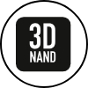
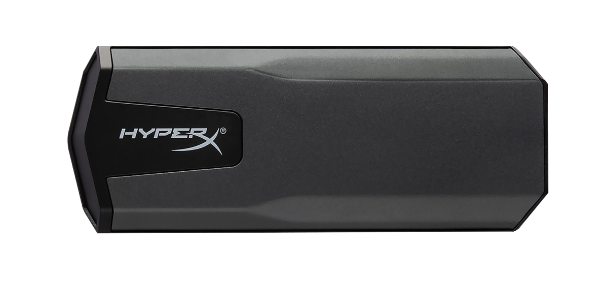

El A1000 de Kingston, ofreciendo velocidades de lectura y escritura de hasta 1.500 MB/seg y 1.000 MB/seg.*, es ideal para aplicaciones que requieren de mayor rendimiento como Photoshop, Video & Digital Media Pro, CAD y virtualización.

3D TCL NAND
Ofrece un rendimiento y capacidad de respuesta excepcional para soportar cargas de trabajo más pesadas, multi-tasking y en general un sistema mucho más rápido.
DISEÑO ULTRADELGADO
Se integra fácilmente en diseños con conectores M.2; ideal para notebooks delgados, livianos y en sistemas con espacio limitado.
DISPONIBLE EN MULTIPLES CAPACIDADES DE HASTA 960GB**
Para cumplir con tus todas tus necesidades de almacenamiento.
SAVAGE EXO
SSD Ultra-liviano y portátil

TECNOLOGÍA 3D NAND
ULTRA LIVIANO, 56G DE PESO
SÚPER COMPACTO